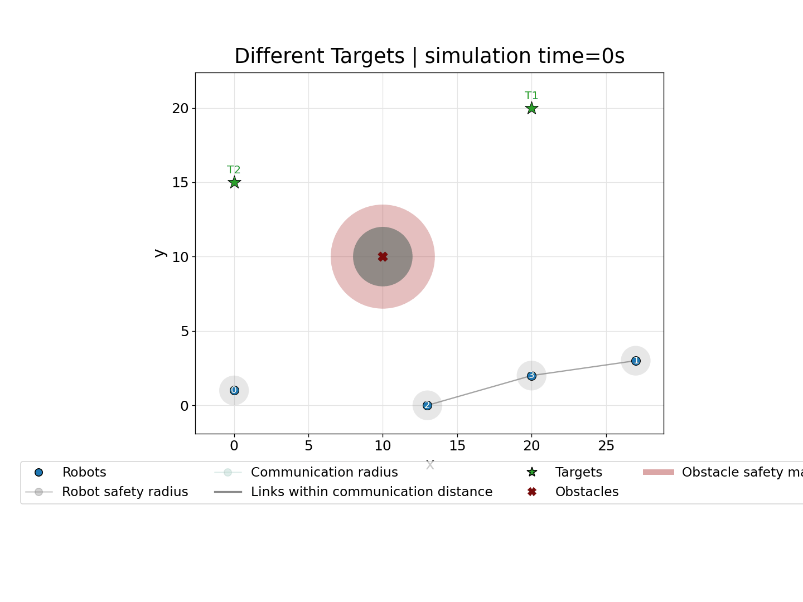

ACSOS 2026 · PhD Symposium
Toward a Collective Robotic Operating System
Aggregate Computing for adaptive robot swarms

The engineering problem
A swarm keeps changing while it operates
A robotic collective must pursue a system-level goal while each robot has only a local view.
Robots move, fail, join, and leave
Connectivity and sensing change at runtime
Unsafe transients can cause physical damage
The collective needs runtime support, not only a coordination algorithm.

Programming abstraction
Aggregate Computing programs the collective
Each device repeatedly:
- senses local information;
- exchanges data with its neighbors;
- runs the same aggregate program;
- acts on its local result.
Local executions compose into a global behavior.

One program, distributed execution, collective outcome
Progress so far
Four building blocks for the operating layer


Each problem contributes a mechanism that can become part of a shared runtime.
Latest contribution
Toward Safe Aggregate Computing
Aggregate program
Computes the nominal swarm command unom
CLF/CBF safety filter
Refines it into a feasible command u before actuation
Collective strategy and physical safety remain separate concerns.
Proof of concept
The filter preserves active constraints in simulation


Current scope: proof-of-concept simulations. Quantitative scalability and overhead evaluation remain future work.
Next research step
A shared runtime for managed collective adaptation
Integrate the building blocks into a runtime that can:
- run and preempt multiple aggregate processes;
- share state across dynamic regions;
- switch strategies while preserving safety.
Planned extension: adaptive navigation policies that escape local minima, then resume the original objective.

Code and experiments
Make the swarm programmable as one system, while keeping its adaptation explicit and safe.